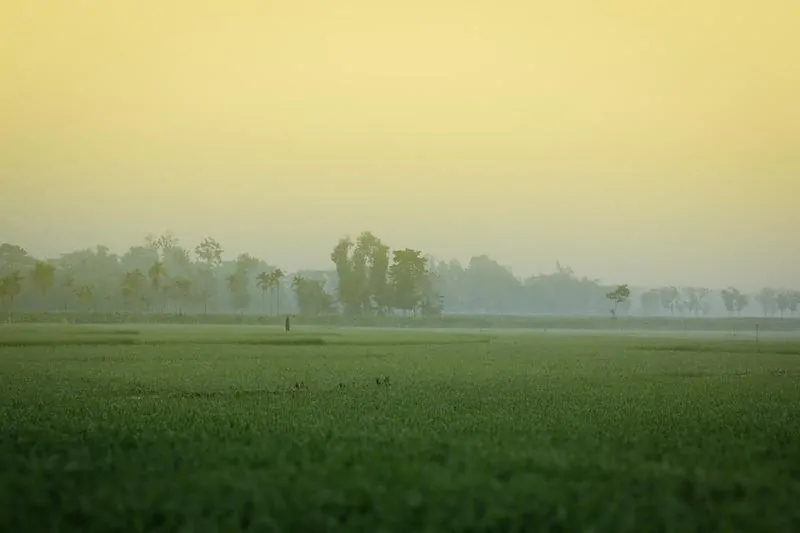

Bangladesh Travel: Know Before you Go
My time in Bangladesh was a whirlwind and full of surprises (both good and occasionally uncomfortable). It was all the more full of surprises because of the lack of information available online about travel in Bangladesh – many Bangladesh travel blogs were written several years ago, pre 2015 when already low international tourist numbers decreased. And of course, Bangladesh is a country which (sadly) not many foreign travellers make it to…Yet.
We’ll also help you to work out if travel to Bangladesh is right for you.
So with that in mind, these I’ve put together these Bangladesh travel tips to help you determine if travel in Bangladesh is for you, and information to help you plan your trip to Bangladesh!

Is Travel in Bangladesh for You?
Bangladesh is without doubt one of Asia’s undiscovered gems, but unfortunately (mostly due to a mixture of political instability and natural disasters), Bangladesh has gathered not the best reputation internationally. Bangladesh has yet to experience much tourism and is mostly un-touristed: a foreign face will excite a lot of attention and interest, almost always of a friendly and kindly nature. “Excuse me mam, your country?” were probably the words I heard spoken most to me on my trip.
Bangladesh is without doubt one of Asia’s undiscovered gems, but unfortunately (mostly due to a mixture of political instability and natural disasters), Bangladesh has gathered not the best reputation internationally. Bangladesh has yet to experience much tourism and is mostly un-touristed: a foreign face will excite a lot of attention and interest, almost always of a friendly and kindly nature. “Excuse me mam, your country?” were probably the words I heard spoken most to me on my trip.
As an un-touristed destination, Bangladesh is relatively free from the tourist-scams that are common in neighbouring India. On the other hand, Bangladesh also lacks much of the infrastructure of neighbouring India, and travelling around can be hard work. Roads can be unpaved, traffic is dire in some places (mostly Dhaka) – for more see the transport section – and transport conditions are basic at best. English is not widely spoken, which can make independent travel difficult in more rural areas.
Bangladesh can also be raw: along with the beautiful landscapes, people and places, expect to see a lot of poverty, and a huge amount of pollution and dirt. Don’t come if you’re not comfortable with dressing conservatively, sitting in crowded transport, and experiencing a variety of conditions. Perhaps the best description of Bangladesh I’ve heard is a “more raw version of India” – but even that comparison falls a long way short of the variety and richness of culture available in Bangladesh, and the positive surprises that this small but bustling country has in store for travellers who make it there.
7 things to know before you visit
1. First things first: do check the current political situation and travel advisories of your country for Bangladesh before booking your trip. The country has experienced political turmoil in the past, and the situation can change quickly. You can find the UK travel advisory for Bangladesh here. Make sure you take out good travel insurance.
2. Visa on Arrival. Citizens of many countries can get a Visa on Arrival for Bangladesh if flying in to Dhaka airport, if you are travelling for tourism (tourist visa) and plan to stay less than 30 days. You can find up to date info on the Bangladesh visa on arrival here.
3. Money. The currency in Bangladesh is the Bangladeshi Taka. Officially it’s not available outside of Bangladesh, however there are exchange shops in the Sudder Street area of Kolkata that will be able to give you Taka in exchange for your Rupees. If coming by bus from India, you can exchange money at the border, although beware of touts! If flying in, then get your Taka at the airport at an ATM or exchange counter. It’s easiest to change USD into Taka at exchange shops in Bangladesh. Not all ATM’s accept foreign cards, and there are reports of cards being frequently swallowed (eek) so check before pushing your card in the slot. I used Standard Chartered bank ATMs with my visa debit card and found that to work OK.
4. Language. Bangla (or Bengali) is the language of Bangladesh and is largely the same as the Bengali spoken in India. The major difference you will find is in levels of spoken English in Bangladesh: English is not widely spoken, especially outside of cities, and announcements on transport, at stations etc are not in English. Younger people (eg students) are more likely to speak English than the older generation. Numbers are written in Bangla script, which means checking coach numbers for trains, uber registration plates, and even prices can be a bit of a pain. If you can learn how the Bangla numbers look in advance you will be at an advantage!
5. Timings and weekends. Bangladesh is on GMT+6, making it 0.5 hours ahead of India. The weekend is either one or two days (depending on what job you do) – everyone has Friday (the muslim sabbath) off, and government, bank and (some) office workers also have Saturday off.
6. All roads lead to….Dhaka. One of the more frustrating elements of travel around Bangladesh is that travelling between different regions of the country all too often means stopping back in Dhaka. It is possible to go by train directly from North West (eg Rangpur & Rajshahi divisions) to South West by train without going via Dhaka, similarly it is possible to travel from Sylhet (North East) to Chittagong (South East) directly by train. Buses connect the divisions to Dhaka, but not commonly to each other. So consider that some extra time to get familiar with Bangladesh’s bustling capital!
7. Offers of hospitality the highlight of Bangladesh (for me at least) has to be its people. Expect to get lots of (usually friendly) attention, enquiries as to your family and offers of tea, dinner, lunch. Culturally, it’s important to Bangladeshis to be welcoming to guests so do not feel under pressure to accept dinner invitations unless they are repeated several times, although equally if you can spare a few minutes to have a cha (tea) with a new friend, it may make for one of your favourite memories.